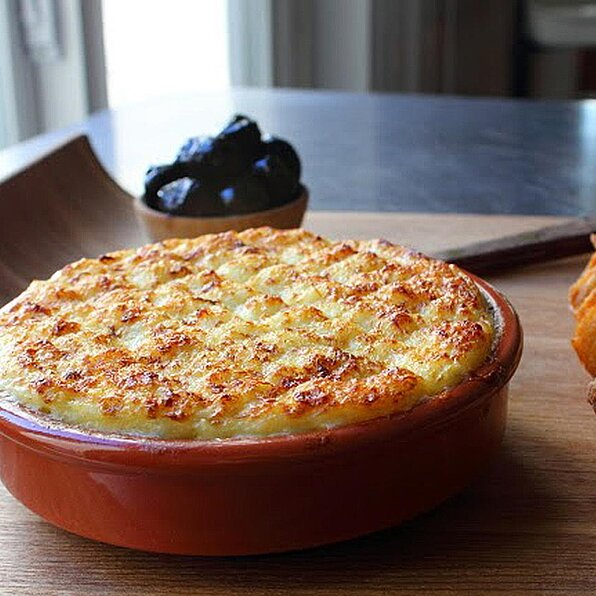

Brandade

Description
There are certain things that if I see on a menu, I will almost always order them, and brandade is one of those things. This amazing dish from the south of France can be made many different ways, but it's usually some sort of combination of salt cod, potato, garlic, and olive oil. This should always be baked and eaten piping hot, ideally with some homemade crostini.
Ingredients
- 1 pound salted cod fish
- 1½ cups whole milk
- 6 sprigs fresh thyme
- 2 bay leaves
Steps
- Preheat oven to 450 degrees F (230 degrees C). Lightly grease a baking dish and set dish on a baking sheet.
- Rinse salt cod under cold water, transfer to a sealable container and cover with several inches of cold water. Soak cod in the refrigerator, changing the water every few hours, for 24 to 36 hours. Remove cod from water and cut into evenly-sized pieces.
- Stir cod, milk, thyme, bay leaves, and cayenne pepper together in a pot over medium-high heat. Cook until fish begins to flake; 7 to 15 minutes. Remove from heat and strain; reserve cooking liquid and transfer fish to a bowl.
- Place potatoes and garlic in a large pot and cover with water; bring to a boil. Reduce heat to medium-low and simmer until tender, about 20 minutes. Drain.